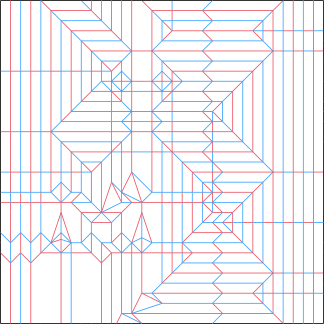
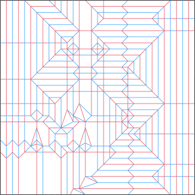

May 2022
Another figure in the "ordinary people" series. This time, the goal was to create an illusion of motion with the clothes and pose, as if the figure really is struggling to walk forward on a windy day.
 

Both arms come from the right side of the paper, and then twisted into place.
Tags: human, portfolio, bp, uniaxial, has_cp, 2022,